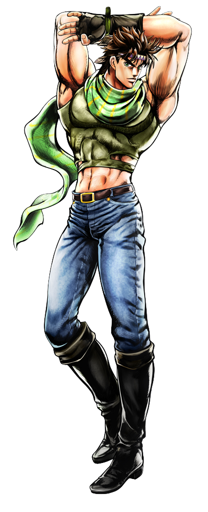
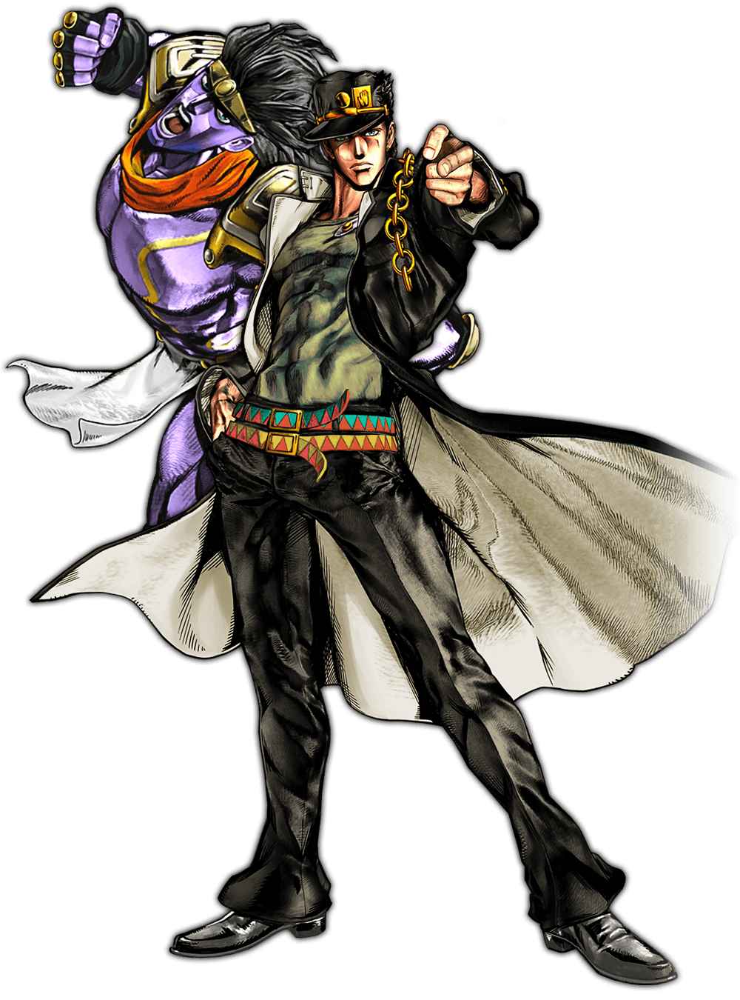
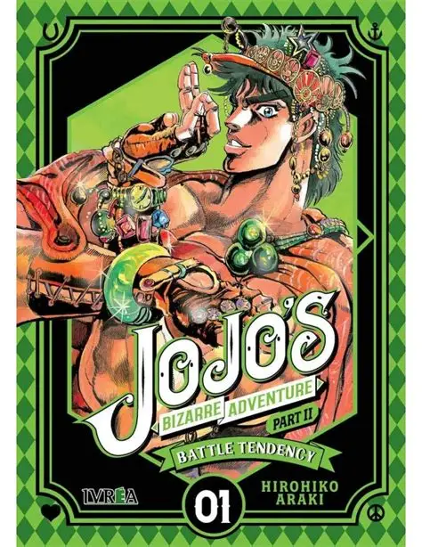
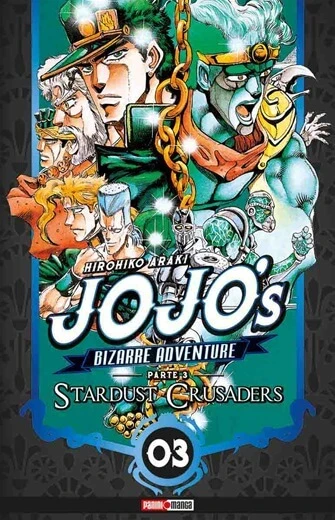
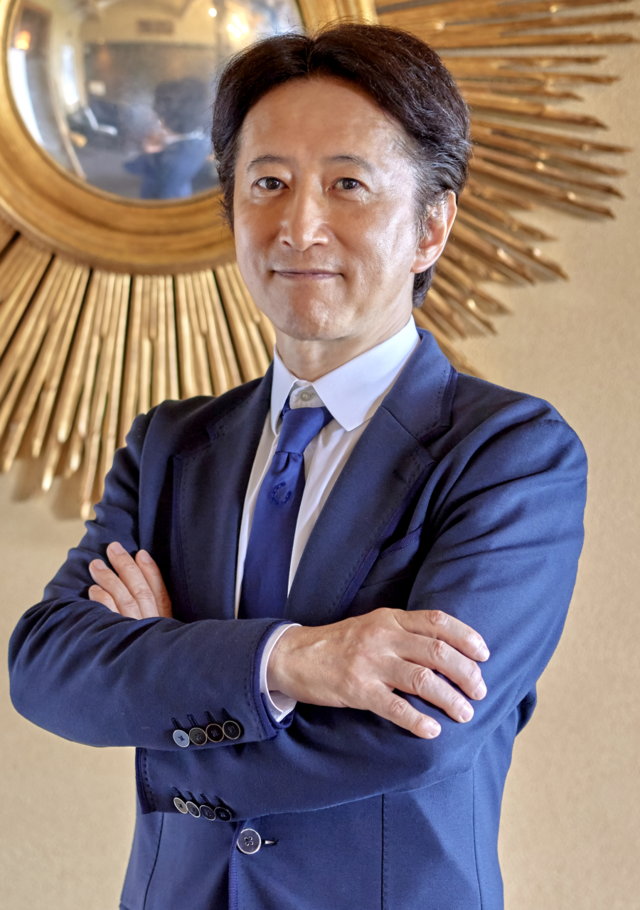

Inicio
Bienvenido a la wiki de JoJo's Bizarre Adventure, la famosa saga creada por Hirohiko Araki. Aquí encontrarás las partes, los personajes, los Stands y sus niveles de poder.
Los cinco JoJos
 Jonathan Joestar |  Joseph Joestar |  Jotaro Kujo |  Josuke Higashikata |  Giorno Giovanna |
Partes
- Parte 1: Phantom Blood

- Parte 2: Battle Tendency

- Parte 3: Stardust Crusaders

- Parte 4: Diamond is Unbreakable

- Parte 5: Golden Wind

- Partes 6 a 9: consulta la sección del manga.
Autor
Hirohiko Araki

Hirohiko Araki (荒木 飛呂彦), nacido en Sendai, Prefectura de Miyagi, el 7 de junio de 1960, es un mangaka japonés conocido por ser el creador de JoJo's Bizarre Adventure. Recibió el Premio Tezuka en 1979 por su manga Busō Poker.
Su primera serialización fue Cool Shock B.T. en 1983, seguida de Baoh en 1984 y The Gorgeous Irene en 1985. JoJo's Bizarre Adventure comenzó en 1987 en la revista Weekly Shōnen Jump y hoy continúa en Ultra Jump.
Fuente: Wikipedia
Argumento
JoJo's Bizarre Adventure sigue la historia de la familia Joestar a lo largo de varias generaciones. Cada parte presenta a un nuevo protagonista, conocido como un "JoJo".
La saga combina acción, aventura, misterio, terror, humor y elementos sobrenaturales. Destacan los Stands.
En conjunto, es una historia sobre el legado familiar, la lucha contra el destino y los vínculos entre generaciones.
Manga
Escrito e ilustrado por Hirohiko Araki. La historia principal consta de nueve partes:
- Phantom Blood
- Battle Tendency
- Stardust Crusaders
- Diamond is Unbreakable
- Golden Wind
- Stone Ocean
- Steel Ball Run
- JoJolion
- The JOJOLands
Las seis primeras comparten continuidad. Desde la Parte 7 comienza una nueva continuidad. JoJolion terminó en 2021 y The JOJOLands se publica desde 2023.
Anime
La adaptación al anime comenzó en 2012, producida por David Production.
| Parte | Título | Estreno |
|---|---|---|
| 1 y 2 | Phantom Blood y Battle Tendency | 2012-2013 |
| 3 | Stardust Crusaders | 2014-2016 |
| 4 | Diamond is Unbreakable | 2016 |
| 5 | Golden Wind | 2018-2019 |
| 6 | Stone Ocean | 2021-2022 |
Videojuegos
- JoJo's Bizarre Adventure (Capcom, 1998)
- Juego de lucha arcade basado en la Parte 3.
- All Star Battle (2013)
- Lucha con personajes de varias partes.
- Eyes of Heaven (2015)
- Lucha por equipos.
- All-Star Battle R (2022)
- Versión ampliada de All Star Battle.